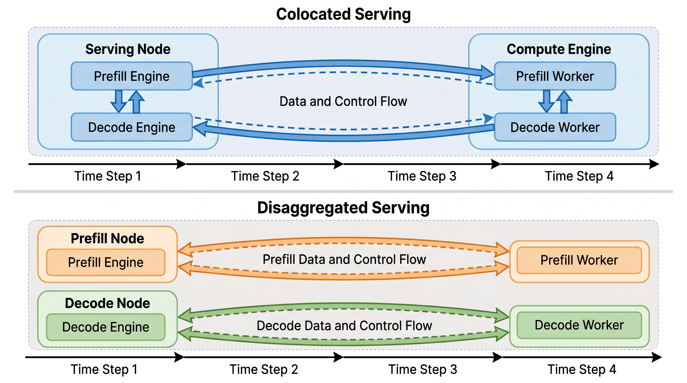
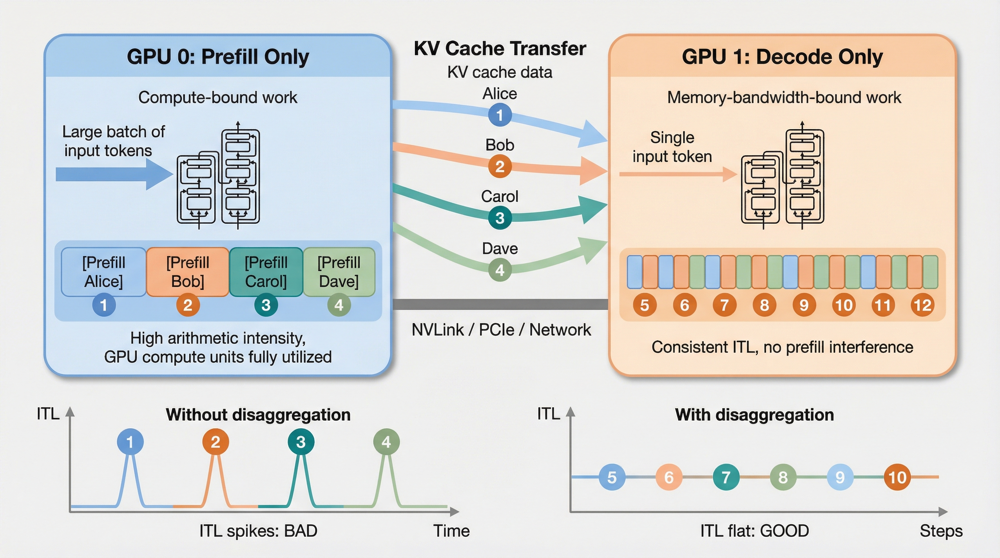
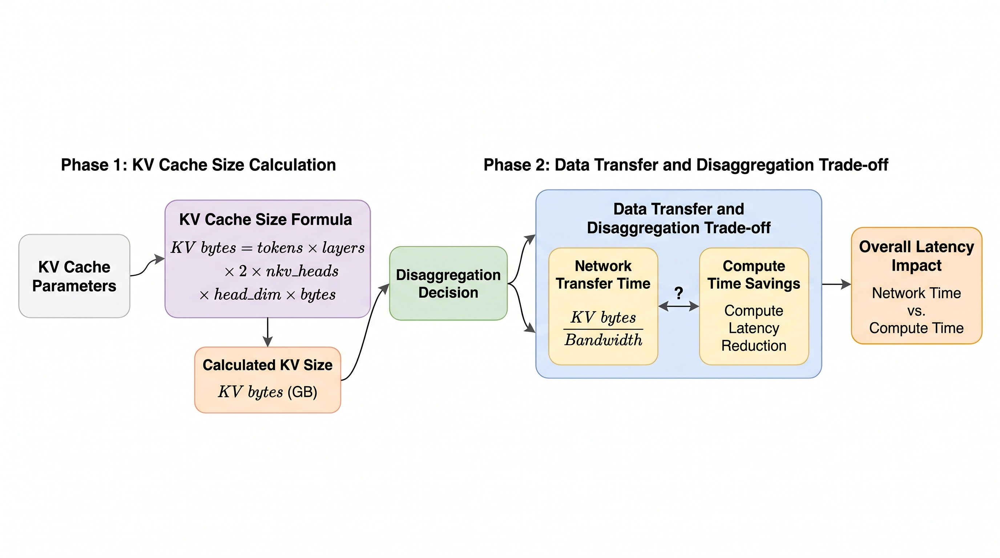

分离式服务
一个生产级 LLM 服务器其实是两台截然不同的机器共用了一个名字：一台吞下 prompt 的预填充机器，和一台流式输出 token 的解码机器。分离式服务（disaggregated serving）把它们拆开，让各自以自然的节奏运行。
一个模型，两种工作负载
自回归推理有两个阶段。在 预填充（prefill） 阶段，模型处理整个 prompt 并创建初始 KV 缓存。在 解码（decode） 阶段，模型生成一个新的 token，追加一条新的 KV 条目，然后不断重复。这两个阶段对 GPU 施加的压力不同。
Prompt 摄取
输入：大量 token。输出：首批 logits 以及 prompt 的完整 KV 缓存。
擅长：大批量、粗颗粒工作、高 GPU 占用率。
Token 流式输出
输入：每个序列一个 token。输出：每个序列一个 token，反复多次。
擅长：稳定节奏、连续批处理、受保护的 TPOT。
预填充想要大块，解码想要节奏。
对单个请求而言，预填充只发生一次，而解码每生成一个 token 就发生一次。这意味着一个长 prompt 会在开始时制造一波计算爆发，而一个长回答会在之后制造许多次细小的解码迭代。
解码成本 ≈ 处理(1 个新 token) × output_tokens
服务之痛 ≈ 预填充突发干扰解码节奏
请求到达
估算 prompt 长度和 SLO。
预填充运行
prompt token 创建初始 KV 缓存。
KV 移动
缓存成为解码所需的状态。
解码循环
每次迭代每个序列一个 token。
Token 流式输出
解码继续时用户看到输出。
只有理解了引擎循环，分离式服务才有意义。
一个现代的 vLLM 风格服务器并不是一个简单调用 model.generate() 的 Web 进程。它是一个持续运行的调度器。每一步，引擎都会选择哪些请求进入 batch，更新 KV 块元数据，准备紧凑的 GPU 输入，运行一次展平的前向传播，采样 token，然后重复。
等待队列
新 prompt、恢复的请求和被抢占的请求竞争 token 预算。
调度器步骤
在内存和 token 限制下选择预填充分块和解码 token。
元数据
构建位置、slot 映射、块表和注意力元数据。
前向传播
用分页注意力将所有活动序列展平为一个紧凑的超级批。
采样 token
提取最后 token 状态、采样、追加 KV，并返回调度器。
连续批处理（continuous batching）
每一次引擎步骤之后，完成的请求离开，新的请求可以进入，活跃请求继续。无需把每个序列填充到相同长度；分页注意力和注意力元数据在一个展平的 batch 里保持序列彼此分离。
分页 KV 内存
每个请求拥有逻辑上的 KV 位置，但物理 KV 缓存按块存储。调度器更新块表，注意力 kernel 在前向传播期间遵循该映射。
分块预填充是局部修复，分离式服务是架构级修复。
在拆分 worker 之前，vLLM 可以通过把一个长 prompt 切成更小的预填充分块来减少干扰。与其让一个 8K token 的 prompt 独占整个步骤，调度器会限制单次迭代中可处理的新 prompt token 数量。这能让解码 token 持续流动，但同一个 GPU 池仍然在共享两种不兼容的工作负载。
分块预填充有助于 TTFT 公平性
它防止单个长 prompt 在一个非常大的引擎步骤中阻塞其他所有请求。
它并不能消除资源错配
计算密集的预填充和内存密集的解码仍然共享同一个 worker 的 GPU 内存、队列和调度器。
分离式服务增加了一项新成本
一旦预填充和解码运行在不同的 worker 上，KV 缓存就必须在流式输出开始前跨互联结构移动。
在统一服务器里，预填充和解码互相打架。
当两个阶段运行在同一个 GPU 池上时，一个长预填充会占用 GPU 时间，而活跃用户正在等待他们的下一个流式 token。症状很简单：第一个用户已经开始收到响应，但流突然卡顿，因为另一个用户的长 prompt 进入了 batch。

新细节。 在同置泳道里，解码流变慢并不是因为注意力数学变了；而是因为调度器在解码迭代之间插入了大量预填充工作。分离式服务把这种时间上的干扰变成了显式的 KV 交接。
数值干扰追踪
Traffic at t=0: 64 active decode streams, each wants 1 token every 50 ms 1 new long-context request arrives with 12,000 prompt tokens Unified worker: Step A: decode 64 tokens -> 45 ms Step B: prefill chunk of long prompt -> 180 ms Step C: decode 64 tokens -> 45 ms Observed stream gap: expected token gap ~= 50 ms actual token gap ~= 225 ms user sees stutter Disaggregated: Prefill worker runs 12K prompt separately Decode worker keeps 45-55 ms cadence user sees steady stream, but waits for KV handoff before first token
分离的池，显式的交接。
分离式服务创建专用的预填充 worker 和专用的解码 worker。路由器把 prompt 密集的工作送到预填充池。一旦初始 KV 缓存存在，系统就把它转移给拥有流式输出循环的解码 worker。

要记住的图景。 左侧 worker 对大量输入 token 做高算术强度的预填充。右侧 worker 一次一个 token 地做受内存带宽约束的解码。KV 缓存传输是桥梁。没有拆分时，只要长预填充进入统一 worker，ITL 就会尖峰；有了拆分，解码节奏就更平稳。
入口路由器
分类 prompt 长度、优先级和预估输出长度。
预填充 worker
KV 传输平面
解码 worker
预填充池
针对大块、高算术强度、prompt 批处理和 TTFT 降低做了优化。
解码池
针对稳定的 token 节奏、连续批处理、内存带宽以及 P95/P99 TPOT 做了优化。
KV 传输平面
新的税。只有当移动 KV 缓存比让预填充干扰解码更便宜时，分离式服务才划算。
| 组件 | 它负责什么 | 生产关注点 |
|---|---|---|
| 路由器 | 准入、阶段放置、worker 选择、请求状态。 | 交接之后不能坐在 KV 数据路径上。 |
| 预填充 worker | prompt 执行、首批 logits、临时 prompt KV 块。 | 需要高计算吞吐和 prompt 批处理。 |
| 解码 worker | 流式循环、持久 KV 状态、token 节奏。 | 需要内存带宽、稳定队列和足够的 KV 容量。 |
| 连接器 | KV 从生产者到消费者的移动。 | 需要快速的本地互联结构：NVLink、InfiniBand 或高速以太网。 |
KV 缓存是你为分离式服务支付的过路费。
预填充结束后，解码 worker 需要该请求的 KV 缓存。其大小可以从模型架构和 prompt 长度预测。

新细节。 KV 传输税（KV transfer tax）随 prompt token 数和层数线性增长。GQA/MQA 通过减少 KV 头来降低这项税；长上下文的稠密 MHA 则让它变得痛苦。
交互式 KV 传输计算器
默认值接近 Llama-70B 风格的 GQA 模型：80 层、8 个 KV 头、128 头维度、BF16。
传输估算
盈亏平衡测试
benefit = avoided_decode_stall_ms + avoided_prefill_queue_ms + better_pool_utilization_ms cost = KV_transfer_ms + connector_overhead_ms + extra_failure_retry_ms Use disagg if benefit > cost.
GQA 带来了什么
由于 KV 大小与 kv_heads 成正比，分组查询注意力（GQA）和多查询注意力（MQA）不仅减少了内存占用，也减少了 P/D 传输税。这是注意力变体那节课与生产服务架构之间最清晰的联系之一。
1.34 GB KV 缓存的网络阶梯
对于 Llama-70B 风格的模型，4K prompt 大约产生 1.34 GB 的 KV 缓存。在普通网络上这慢得令人痛苦；在本地数据中心的互联结构上则变得可行。
| 互联结构 | 大致带宽 | 1.34 GB 的传输时间 | 结论 |
|---|---|---|---|
| 1 GbE | 0.125 GB/s | ~10.7 s | 对交互式服务不可行。 |
| 10 GbE | 1.25 GB/s | ~1.1 s | 对 TTFT 预算来说往往太慢。 |
| 100 GbE | 12.5 GB/s | ~110 ms | 配合谨慎的排队可行。 |
| InfiniBand HDR | 25 GB/s | ~54 ms | 与生产相关。 |
| NVLink / 同节点 | 数百 GB/s | 几毫秒 | 如果放置在本机则非常出色。 |
交接是一套协议，而不只是一次拷贝。
在分离式的 vLLM 风格设计中，KV 传输围绕模型执行来协调。预填充 worker 生产 KV 块；解码 worker 预留空间并等待这些块；一旦加载完成，解码继续，该请求的外部 KV 只被消费一次。
分配
解码 worker 为即将到来的请求预留 KV 块。
生产
预填充 worker 为每个 prompt token 和每一层创建 K、V 张量。
连接
路由器协调生产者和消费者；数据路径可以是直连的。
加载
解码 worker 在第一个解码步骤之前导入 KV 块。
解码
现在该请求表现得像一个普通的本地解码请求。
哪里可能出错？
KV 块可能迟到，解码内存可能已满，预填充 worker 可能在解码 slot 就绪前就完成，或者网络拥塞把一个干净的架构变成 TTFT 问题。
必须测量什么？
等待预填充的时间、传输 KV 的时间、解码队列延迟、KV 内存占用，以及因为交接而错过 SLO 的请求数量。
是的：vLLM 和 SGLang 都有分离式服务路径。
这已不再仅仅是论文里的架构。它正出现在真实的服务栈中，但仍然是一种高级部署模式：你需要多个实例、一个路由器或代理、KV 传输配置、快速的本地互联结构，以及细致的可观测性。
vLLM 现状
vLLM 将 分离式预填充（disaggregated prefilling） 记录为实验性功能。该实现运行一个预填充实例和一个解码实例，然后通过 vllm/distributed/kv_transfer 下的连接器传输 KV 缓存。可用的连接器示例包括 NIXL、LMCache、P2P NCCL、Mooncake、FlexKV 和卸载连接器。
vLLM Router
vLLM Router 是一个面向大型部署的状态感知负载均衡器。其公开仓库描述了它支持负载均衡、服务发现、健康检查、指标以及预填充/解码分离。
SGLang 现状
SGLang 记录了 PD 分离，也记录了面向多模态工作负载的 EPD 分离，其中编码器、预填充和解码阶段可以分开，用于 VLM 服务。
最小 SGLang 单节点示例
SGLang 目前拥有最简洁的起步命令。基本形态是：启动一个预填充模式的服务器、一个解码模式的服务器，然后在前面放一个小的负载均衡器。
# 1. Prefill worker python -m sglang.launch_server \ --model-path meta-llama/Llama-3.1-8B-Instruct \ --disaggregation-mode prefill \ --disaggregation-transfer-backend nixl # 2. Decode worker on another GPU / port python -m sglang.launch_server \ --model-path meta-llama/Llama-3.1-8B-Instruct \ --disaggregation-mode decode \ --port 30001 \ --base-gpu-id 1 \ --disaggregation-transfer-backend nixl # 3. Lightweight load balancer / front door python -m sglang.srt.disaggregation.mini_lb \ --prefill http://127.0.0.1:30000 \ --decode http://127.0.0.1:30001 \ --host 0.0.0.0 \ --port 8000
vLLM 生产形态
vLLM 的生产配置取决于连接器。稳定的心智模型是一样的：预填充是 KV 生产者，解码是 KV 消费者，代理/路由器编排两阶段的请求。使用官方示例脚本获取确切的连接器专用 JSON。
# Conceptual vLLM layout. Fill connector JSON from the official example you use. # 1. Prefill instance: computes prompt KV cache vllm serve $MODEL \ --port 8100 \ --kv-transfer-config '{"kv_connector":"NixlConnector","kv_role":"kv_producer", ...}' # 2. Decode instance: receives/loads KV, then streams tokens vllm serve $MODEL \ --port 8200 \ --kv-transfer-config '{"kv_connector":"NixlConnector","kv_role":"kv_consumer", ...}' # 3. Router/proxy: OpenAI-compatible entry point # Routes request -> prefill -> decode, tracks worker health and queue state.
生产检查清单
有用的教程和文档
| 资源 | 用它来做什么 |
|---|---|
| vLLM 分离式预填充文档 | 连接器抽象、官方示例路径、基准测试和实现位置。 |
| vLLM Router | 生产路由、负载均衡、服务发现和 P/D 感知的编排。 |
| vLLM MORI-IO 博客 | 具体的单节点 PD 设置、读/写传输模式、代理和 RDMA 交接细节。 |
| SGLang PD 分离文档 | 使用 Mooncake、NIXL 和其他传输后端的单节点及多节点命令。 |
| SGLang EPD 分离文档 | 面向多模态/VLM 工作负载的编码器-预填充-解码分离。 |
路由器成为模型服务器的一部分。
分离式系统需要放置决策。路由器估算一个请求应该走拆分路径、留在本地、等待空闲的解码 slot，还是使用压缩/卸载的 KV 路径。
| 请求类型 | 路由选择 | 原因 |
|---|---|---|
| 短 prompt、短回答 | 统一或本地 | KV 传输开销可能占主导。 |
| 长 prompt、交互式回答 | 分离式 | 大预填充不应干扰活跃的解码流。 |
| 批量摘要 | 预填充密集池 | 吞吐比 token 节奏更重要。 |
| 长多轮对话 | 局部性感知 | 如果会话继续，让 KV 靠近解码 worker。 |
独立扩缩容的经验法则
对于短 prompt 和长响应，分配更少的预填充 worker 和更多的解码 worker。对于长 prompt 和短响应，分配更多的预填充 worker 和更少的解码 worker。正确的拆分取决于工作负载，这正是关键所在：把两个阶段一起扩缩容是在浪费容量。
| 流量组合 | 可能的压力 | 池形态 |
|---|---|---|
| 长回答的聊天助手 | 解码占用 | 更多解码 worker。 |
| 长文档上的 RAG | 预填充突发加 KV 传输 | 更多预填充 worker；关注互联结构。 |
| 摘要批量 | prompt 处理 | 预填充密集、面向吞吐。 |
| 可复用模板的 agent 循环 | 缓存局部性 | 路由器应利用前缀/缓存复用。 |
你什么时候应该做分离式服务？
何时使用
prompt 很长、流量呈突发性、解码 SLO 很重要，而且你有足够的请求让两个池都保持温暖。
何时要小心
请求很短、流量很低、网络带宽很弱，或者 KV 缓存太大而无法廉价移动。
测量这些
TTFT、TPOT、P95/P99 延迟、预填充队列延迟、解码队列延迟、KV 传输时间、GPU 利用率，以及每个生成 token 的成本。
它如何融入完整的 vLLM 栈
分离式 P/D 与其他 vLLM 服务特性并列。PagedAttention 让 KV 内存变得可控，连续批处理让解码 slot 保持填满，分块预填充减少本地干扰，前缀缓存避免重复的 prompt 工作，投机解码攻击解码延迟，而分离式服务在一个池无法干净地服务两者时，把两种资源画像拆开。
进一步阅读的来源
本教程基于两篇优秀的公开讲解：JarvisLabs 关于分离式预填充-解码的文章，以及 Aleksa Gordić 对 vLLM 引擎、调度、分页注意力、分块预填充和高级服务特性的深入剖析。